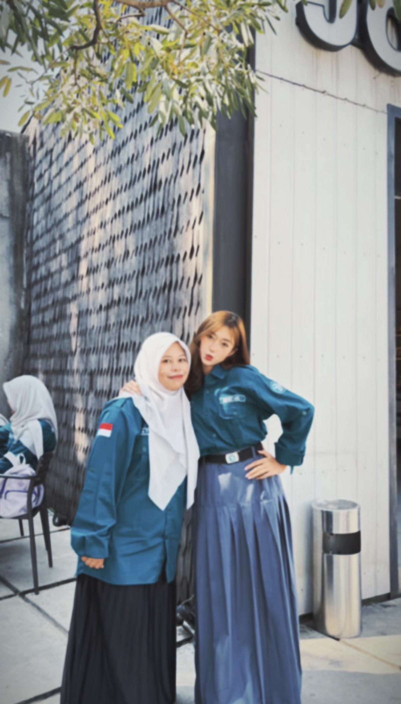

enter password

hehehe hiii umiii ^^ sebenernya fio ga terlalu jago nyusun kata-kata, jadi maaf ya kalau semuanya terdengar berantakan. tapi ada banyak hal yang pengen aku sampein, dan rasanya ga akan cukup kalau cuma bilang "terima kasih".
makasih karena udah jadi pembina osis yang sabar banget ngadepin kami. fio tau ngurus banyak anak dengan sifat dan kepala yang beda-beda itu capek, kadang pasti bikin kesel juga. tapi umi selalu berusaha ada buat kami, selalu ngarahin kami, dan selalu ngingetin kami kalau kami bisa jadi lebih baik dari hari kemarin.
tapi yang paling pengen fio bilang, makasih bukan cuma karena umi udah ngebina osis.
makasih karena pernah ada buat fio di saat yang bahkan ga banyak orang tau kalau fio lagi kesusahan. ada masa dimana semuanya terasa berattt banget, dan jujur aja fio ga pernah berharap ada orang yang sadar. fio pikir bisa nyimpen semuanya sendiri.
but somehow, i can't even do it without u, umi :( 🤍
umi dengerin fio tanpa ngehakimin, umi nenangin fio waktu pikiran lagi berantakan, dan umi terus bilang kalau everything is gonna be okay.
mungkin buat umi itu cuma percakapan biasa, cuma beberapa kata sederhana.
but for me, it meant so much more than that.
karena di saat fio merasa sendirian, umi ada.
di saat fio bingung harus cerita ke siapa, umi ada.
dan di saat fio butuh seseorang buat bilang kalau semuanya bakal baik-baik aja, umi juga ada.
fio gatau umi sadar atau engga, tapi hal-hal kecil yang umi lakuin waktu itu bener-bener berarti buat fio.
thank you for listening.
thank you for understanding.
thank you for being kind.
thank you for staying.
dan makasih karena udah jadi salah satu orang yang bikin fio percaya kalau masih ada orang baik yang tulus peduli sama orang lain yaa mii 🤍
semoga semua kebaikan yang umi kasih ke orang-orang bisa balik berkali-kali lipat ke umi. semoga umi selalu dikasih kesehatan, kebahagiaan, dan hal-hal baik yang umi pantas dapetin.
dan kalau suatu hari umi lupa seberapa berarti diri umi buat orang lain, i hope you remember this:
you matter.
you are appreciated.
and you have helped more people than you realize.
makasih untuk semuanya, umi ☹️🤍
— fio 🤍